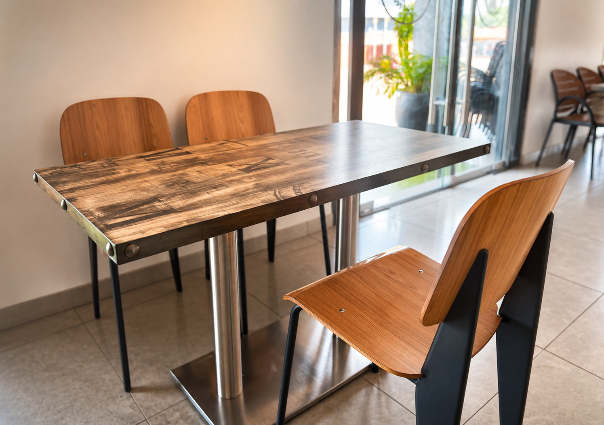

Notre Carte

Bienvenue auRestaurant AMB
L'art de la cuisine — Pizzas, grillades, spécialités locales et cocktails.
L'art de la cuisine — Pizzas, grillades, spécialités locales et cocktails.
Situé au cœur de Kankan, le Restaurant AMB célèbre la rencontre entre tradition et excellence culinaire. Dans un cadre chic, feutré et chaleureux, notre équipe met tout en œuvre pour vous offrir un moment d'exception.
Que ce soit pour nos célèbres Plats du Jour aux saveurs locales authentiques, nos viandes sélectionnées avec soin ou nos cocktails artisanaux, chaque assiette raconte une histoire de passion et de partage.

"Un accueil mémorable et une cuisine incroyable à Kankan. Le poisson frais et les jus de gingembre sont tout simplement divins !"
"Le cadre est magnifique et d'une propreté exemplaire. Idéal pour un dîner d'affaires ou en famille. Je recommande vivement l'émincé de bœuf."
"Le cocktail signature AMB et les plats du jour sont un pur bonheur. Le personnel est aux petits soins. Une vraie adresse gastronomique !"
Rond-point Kefina
Kankan, Haute Guinée
Ouvert tous les jours (7j/7)
De 7h30 à minuit
+224 612 90 90 46
Appelez-nous pour commander